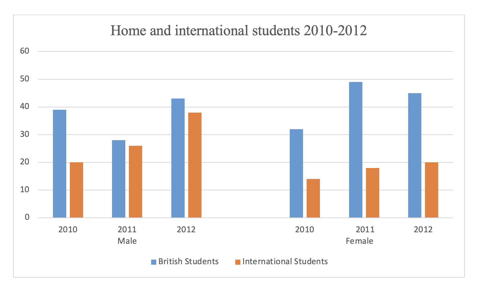

You should spend about 20 minutes on this task.
The line graph below gives information about the number of students studying Computer Science at a UK university between 2010 and 2012
Summarise the information by selecting and reporting the main features making comparisons where relevant.
Write at least 150 words.
